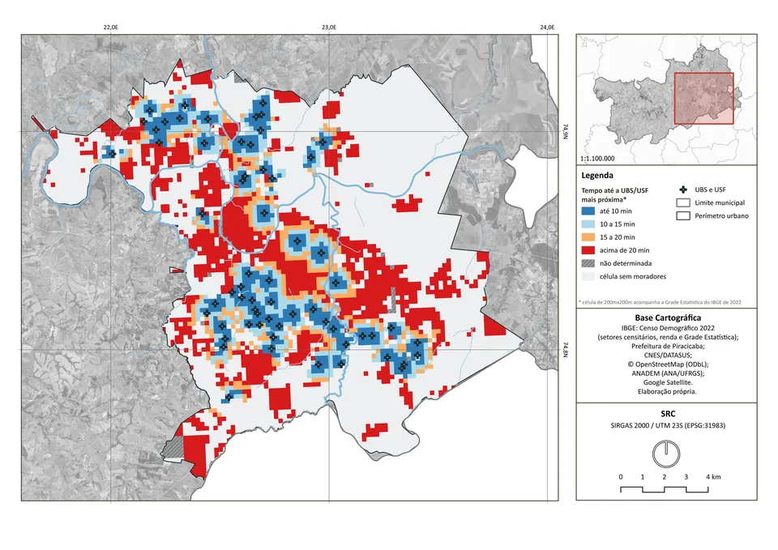
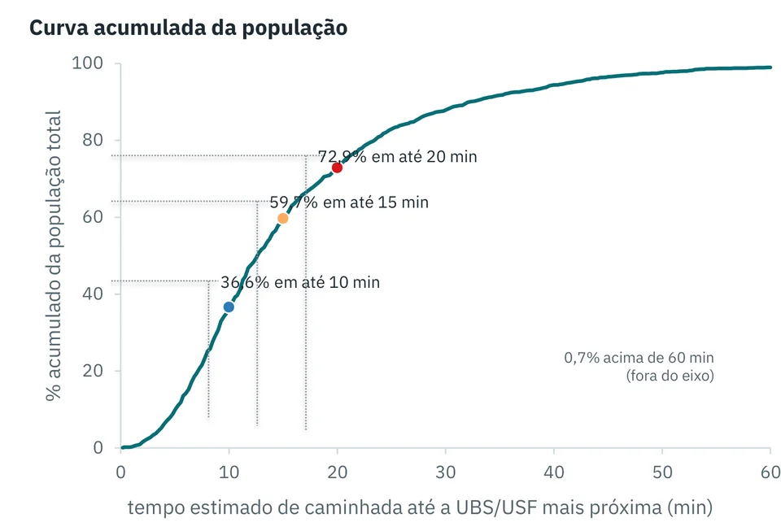

01 Projeto · Piracicaba/SP
Acessibilidade a Pé à Rede de Atenção Primária do SUS em Piracicaba/SP
Tempo estimado de caminhada até as UBS/USF pela rede de ruas e proposição de uma nova unidade
Visão geral
O estudo mede o acesso a pé à Atenção Primária pela rede real de ruas, e não por raios. Cada célula populacional do Censo 2022 é ligada à via pública sem atravessar barreiras, e o tempo até a unidade mais próxima considera a topografia. Quatro em cada dez moradores da sede estão a mais de 15 minutos, concentrados no centro expandido, entre unidades tradicionais. O cruzamento com a renda mostra que a população de baixa renda está, em média, mais próxima das unidades — o déficit que resta é pequeno e fragmentado, e é ele que orienta a simulação de uma nova unidade. A localização proposta em Vila Industrial resulta de critério numérico e conferência territorial como decisão técnica.
Problema
A Atenção Primária é a porta de entrada do SUS e pressupõe proximidade. Raios em linha reta subestimam a distância real: o caminho segue a malha viária, contorna rios, rodovias e condomínios e é afetado pela declividade.
Objetivo
Estimar quantos moradores da sede urbana estão a mais de 10, 15 e 20 minutos de caminhada de uma UBS/USF, localizar esse déficit, cruzá-lo com a renda e testar onde uma nova unidade alcançaria mais moradores de baixa renda em até 15 minutos.
Métodos e tecnologias
- População: Grade Estatística do IBGE (Censo 2022) — 2.542 células habitadas, 401.137 moradores.
- Destinos: 63 UBS/USF da relação oficial da Prefeitura, com coordenadas do CNES conferidas pelo endereço.
- Rede de pedestres do OpenStreetMap; velocidade de 60 m/min no plano ajustada pela declividade (função de Tobler sobre o MDT ANADEM de 30 m, amostrado a cada 30 m, por sentido).
- Renda: rendimento médio do responsável (V06004) por setor censitário; baixa renda = até 2 salários mínimos de 2022.
- Simulação dos nós da rede como local hipotético de nova unidade, seguida de conferência territorial das cinco melhores alternativas.
Fontes de dados
- IBGE — Censo 2022: Grade Estatística; malha de setores e Agregados por Setores (rendimento do responsável)
- Prefeitura de Piracicaba — perímetro urbano e bairros (DWG do Plano Diretor, jun/2026); relação de UBS/USF (out/2026)
- Ministério da Saúde — CNES/DATASUS
- OpenStreetMap — rede de pedestres e hidrografia (ODbL 1.0)
- ANA/UFRGS — MDT ANADEM v1.0 (30 m)
Os dados pertencem às respectivas fontes, com condições próprias de uso.
Resultados
40,05%
dos moradores da sede (160.650 pessoas) estão a mais de 15 min a pé da UBS/USF mais próxima; tempo médio ponderado de 16,17 min.
13.139
moradores passam a mais de 15 min apenas por causa da declividade do percurso — um modelo sem relevo não capta essas diferenças.
16,28%
da população de baixa renda está a mais de 15 min, contra 49,51% dos demais — reflexo da presença de USF nas periferias; o déficit prioritário soma 18.302 pessoas em bolsões periféricos.
1.749
moradores de baixa renda passariam a até 15 min com uma unidade simulada em Vila Industrial (−9,56% do déficit de baixa renda; 2.274 pessoas no total), local escolhido após conferência territorial entre cinco alternativas.
Mapas e gráficos
Clique na imagem para aproximar; arraste ou role para navegar.


Ampliar imagem

Ampliar imagemConsulte os demais mapas, gráficos e resultados no relatório completo disponível ao final desta página.
Limitações
- Tempos estimados por modelo sobre o eixo das vias; calçadas e travessias não foram observadas.
- Renda média do responsável por setor: não descreve cada domicílio.
- Proximidade física não é cobertura assistencial: capacidade, equipes, horários, terrenos e custos não foram avaliados; a unidade simulada é hipotética e não constitui recomendação de investimento público.
Materiais completos
Código no GitHub
gabrielloubarboza/Acessibilidade_rede_SUS_atencao_primaria_em_Piracicaba_SP
Pipeline reproduzido a partir do banco PostGIS; testes de regressão das etapas 2, 3 e 5 aprovados.
Código no GitHub (Abre em nova aba)Dados (GeoPackage)
- etapa2_acessibilidade.gpkgTempos de caminhada e déficit atual
- etapa3_simulacao.gpkgSimulação de nova unidade (13.405 locais)
- etapa5_renda_prioridade.gpkgRenda, prioridade e localização selecionada
- contexto.gpkgContexto cartográfico (OpenStreetMap)
Licença: ODbL 1.0 (derivados do OpenStreetMap), com atribuição a IBGE, CNES/DATASUS e ANA/UFRGS
Não distribuído: Perímetro urbano, núcleos isolados e bairros extraídos do DWG municipal.